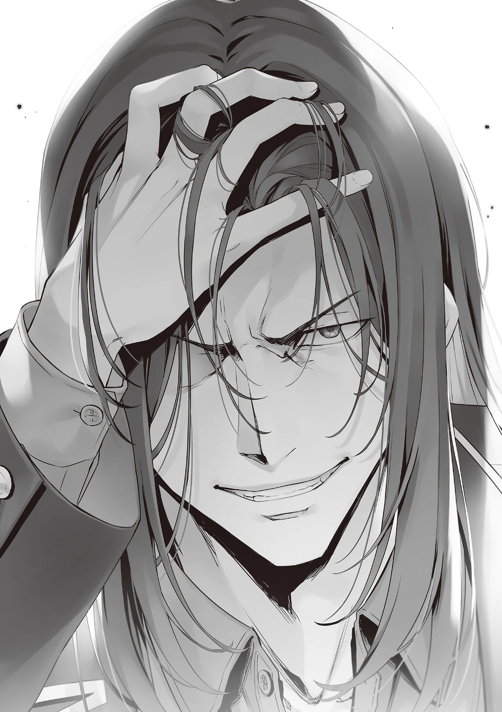

Genelde kafeterya her sınıftan öğrencilerle dolup taşardı ama bugün oldukça boştu.
Düşününce bu hiç de garip değil; çünkü birçok ikinci sınıf öğrencisi hâlâ sınıflarında, Kei gibi telefonlarına gömülmüş durumda.
Zamanlarını boşa harcamamaya ve elenmekten kaçınmaya çalışıyorlardı.
Diğer bir deyişle, kafeteryaya gelmeyi göze alanlar ya elenme riski olmayan liderler ya elenmiş öğrenciler ya da benim gibi çok düşünmeyenlerdi.
Ne yiyeceğimizi belirleyerek yemeklerimizi aldık ve sıklıkla ikinci sınıf öğrencileri tarafından kullanılan masalara oturduk.
“İstediğimiz yere oturabiliriz.”
“Doğru. Ama tuhaf değil mi? Birinci ve üçüncü sınıf öğrencilerinin masaları bu kadar doluyken, ikinci sınıf öğrencilerinin masalarının bu kadar tenha olması garip hissettiriyor.”
Kafeteryada öğrencilerin sınıflarına göre oturma yerlerini sınırlayan yazılı bir kural yoktu.
Öğrenciler bu bölünmeleri örtük olarak yaptılar ve çoğu bu sessiz anlaşmaya uydu.
Tabii ki bu durumu umursamayan öğrenciler de vardı.
“Horikita, sınav hakkında detayları pek umursamıyor gibisin, öyle değil mi?”
“Senin için de aynısı geçerli değil mi?”
“Ben böyle durumlarda atmosferi okumayı ve çoğunluğa katılmayı tercih ediyorum.”
“Umursamıyor gibisin, ama aslında umursuyorsun… Her neyse… Şimdi bunu düşünmeyi bırakacağım. Zihnim şu anda seni düşünmek için fazla meşgul.”
Biraz alaycıydı ama bu benim için pek sorun değildi.
“İyi günler B sınıfı öğrencileri. Rahatsız etmezsem, size katılabilir miyim?”
Tam çubuklarımı ayırmak üzereyken, bir ses bize seslendi.
“Sakayanagi-san, nerede oturduğun tamamen sana bağlı. Seni reddetme hakkım yok.”
Horikita her ne kadar izin verse de şaşırmış olmalıydı.
Böyle önemli bir sınav sırasında rakip liderin kendisine yaklaşmasını yüksek ihtimalle beklememişti.
“Birlikte yemek yemekte de bir sakınca yok, ama senin yemeğin nerede?”
Gördüğüm kadarıyla Sakayanagi hiçbir şey almadan gelmişti.
Şimdi gitse sınava geç kalabilirdi.
“Masumi-san ve Kitō-kun şu anda benim için öğle yemeği alıyorlar. Birazdan burada olurlar.”
Bakışlarını takip ederek, Kamuro ve Kitō’nun tezgahta yorgun bir şekilde sırada beklediğini gördüm.
“Arkadaşlarına gerçekten çok iyi bakıyorsun, değil mi?”
“Evet, onlar da bana çok yardımcı oluyorlar.”
Horikita’nın karşısına oturup bastonunu dayayan Sakayanagi’ye, her elinde bir tepsiyle Kitō kısa süre sonra katıldı.
Bu, onun sürekli Sakayanagi’ye desteğinin açık bir göstergesiydi.
“Şimdi, lütfen ikiniz de oturun.”
“Ha? Burada mı? Horikita ve Ayanokōji ile yemek mi yiyeceğim? Böyle bir şey istemiyorum.”
“Neden olmasın? Bu senin için iyi bir öğrenme deneyimi olabilir, Masumi-san.”
“Beni tekrar başa bela sokmayı mı planlıyorsun? Oyunlarını hoş görmekten bıktım.”
Bu soruyu soran, A Sınıfında elendiği hâlde hiçbir endişe belirtisi göstermeyen Kamuro’ydu.
Asi tavrına rağmen, Sakayanagi’nin sonuncu olması düşüncesinin onun için düşünülemez olduğunu düşündürdü.
İlk yarıyı birinci bitirmiş olması, kendisine güven vermiş olmalıydı.
Kitō’yu selamlamak için hafifçe elimi kaldırdım.
Kitō özellikle tepki vermedi, ama hafifçe başını sallamasını görmek yeterince tatmin ediciydi.
“Umarım ikinci yarıda nazik olursunuz, Horikita-san.”
“Şimdi bunu mu söylüyorsun? İlk yarıda oldukça baskı hissettim, biliyorsun.”
“Oldukça yumuşak davrandım, değil mi? İkinci sırada olmanızdan belli değil mi?”
“Şaka yapıyorsun—”
Horikita, Sakayanagi’nin kendisine kolay davrandığına dair iddiasına biraz sinirlendi.
Tam o sırada, sinirli Horikita’nın arkasından bir erkek öğrenci belirdi.
“Ben de karışayım mı?”
Varlığını hisseden Kitō hemen refleks olarak ayağa kalktı; sanki bir düşmanlık refleksi gibi…
Ancak, kayıtsız kalan öğrenci, izin bile istemeden Horikita’nın yanına oturdu.
“Ne kadar kaba bir giriş, Ryūen-kun.”
“Kuku! Sadece bu koyun sürüsünü kontrol etmeye gelen kurt olarak geldim.”
İlk yarıda sonuncu olmasına rağmen, rahat bir havaya sahipti.
Bununla birlikte, gerçekten altüst olmasına rağmen, burada yorgunluk belirtileri göstermezdi elbette.
“Kaybol.”
Bu sessiz ama ağır sözler Kitō’dan geldi.
“Ha? Bana emir verme hakkını kim verdi? Oradaki cüce bir şey söylemiyor.”
“İzin verin onu şimdi kovayım.”
Niyetini belirten Kitō, Ryūen ile yüzleşmeye hazır bir şekilde ayağa kalktı.
Ryūen’in Sakayanagi’ye attığı hakaretle birleştiğinde, tepkisi gerçekten ağır olabilirdi.
“Endişelenmene gerek yok, Kitō-kun. O sadece aç olduğu için burada. Sonuçta, zayıf ve acınası kurdumuzu ağırlamamız gerekiyor.”
“Ama bir şey getirmiş gibi görünmüyor. Belki de onun ayak işlerini yapan biri vardır, Ishizaki gibi…“
“Acıktığı şey yemek değil, puanlar. İlk yarıda biraz geride başladığı anlaşılıyor.”
“Anlıyorum. Evet, gerçekten de öyle.”
Üç sınıf da yakın bir rekabet içindeyken, sadece Ryūen’in sınıfı geride kalıyordu.
Eğer bir alay olarak düşünülmüşse, neredeyse hiç dalgalanma yaratmadı.
Şüpheli bir hareket olmadığını doğrulayan Kitō, sessizce tekrar yerine oturdu.
“Her neyse, Kamuro, bugün okuldan atılma olasılığı olan birisi için oldukça rahat görünüyorsun.”
Kamuro, kızarmış saury balığını çubuklarının arasında ağzına götürürken durdu ve geri baktı.
“Sen de, Kitō. Tek bir hata ve elenirsin.”
Ryūen’in sözüne karşılık veren Sakayanagi oldu.
“Sınıfımız şu anda birinci, seninki ise en altta. Gerçekten bu konuşmayı yapacak durumda mısın?”
“Sonuncu olsam bile, sadece piyade kaybederim. Ama sen şu anda Kamuro veya Yamamura’nın okuldan atılmasına çok yakınsın. Kitō veya Hashimoto hata yaparsa o sayı dörde çıkabilir. Herhangi biri kaybolursa zarar gören sensin. Ya da ikinci yarıda, Horikita’nın seni acımasızca yaralamasına ve dikkatsizce eleme sayısını çöp gibi artırmasına izin verecek misin?”
Sakayanagi bile birkaç kişinin daha eleneceğinden bahsetmezdi.
Birinin elenmesi demek bir puan kaybetmek demekti.
Bu, esasen istemeyeceğiniz bir şeydi.
“Bana yakın insanları elemeyi mi düşünüyorsun?”
“Bu artık açık değil mi?”
“Şu anda inanması zor. İlk yarıda erişiminizdeki öğrencilere odaklanmanızın açıkça başarısız olduğunu düşünürsek. Ve şimdi, Masumi-san ve Kitō-kun gibi öğrencileri hâlâ acımasızca takip ediyorsunuz.”
Ryūen’in stratejisinin; Kitō, Kamuro ve Hashimoto gibi Sakayanagi’yi destekleyen öğrencilere odaklanan yaklaşık sekiz kişi etrafında yoğunlaştığı izlenimine kapıldım.
Ancak, bu kadar verimsiz ve yoğun saldırılar altında bile Sakayanagi, Kamuro’yu veya Yamamura’yı tam olarak koruyamadı.
Hedeflenen kişinin kim olduğunu bilse bile, saldırıları savuşturmak her zaman mümkün değildi.
Aslında, dört sınıf arasında Sakayanagi, ilk yarıda başarıyla korunan öğrenci oranında en yüksek orana sahipti.
“Olgunlaşmamış stratejiniz sayesinde sınıfımız birinciliği koruyabildi. Bu yüzden minnettarım ama aynı zamanda senin için de endişeleniyorum Ryūen-kun. İkinci yarıda taktiklerini değiştirmezsen yenilgini tekrarlayacaksın. Elbette Horikita-san bile bunu dolaylı yoldan görebilirdi, değil mi?”
“Gerçekten çok açık değil mi? Eğer ben olsaydım ve Sakayanagi-san’ın girişimlerimi savuşturacağını anlasaydım, odağımı daha fazla öğrenci arasında dağıtırdım.”
Özel sınavın değerlendirmesinin burada başlayacağını hiç düşünmemiştim, ama Ryūen dinlerken gülümsüyordu.
“Daha zekice savaşmanızı şiddetle tavsiye ederim.”
Ama yine de Ryūen, kaçmayı reddederek ve dik oturup meydan okuyan bir tavır sergiledi.
“Seni anladım, Sakayanagi. Bir an için puan farkını unut, düşün. Kamuro, sınav şimdi iki elemeyle sona erse ve sınıfınız sonuncu olsa, onun nasıl değerlendireceğini biliyor musun?”
Kamuro hâlâ cevap vermedi, ama kesinlikle bir endişesi olmalıydı.
Lider bu özel durumda nasıl tepki verirdi?
Horikita da, kimi sınıfta bırakmaya karar vermekte hangi kriterleri kullanacağını merak etmiş olmalıydı.
Ama Sakayanagi durmadan yemeye devam etti.
“Cevap veremez misin? Hayır, cevap vermekten mi kaçınıyorsun? Sen ne düşünüyorsun, Horikita?”
“Ne mi düşünüyorum? İlk başta neden Yamamura-san’ı hedef aldığını… Senin hedeflerini birkaç kişiye indirgediğin barizdi, ama Yamamura öne çıkarılacak türden biri gibi görünmüyor, değil mi?”
Kamuro buraya getirildi, ama Yamamura getirilmedi.
Sadece bu gerçek bile, Kamuro’nun daha özel olduğunu düşünmeyi doğal kılıyordu.
Yamamura dışında, hedef alınan diğer öğrencilerin hepsi açıkça seçkin yeteneklere sahipti.
Ama gerçekte, Sakayanagi ve Yamamura arasında görünmeyen bir bağlantı vardı.
Sadece görünür OAA derecelendirmeleri değil, görünmez yetenekleri için de değerlendirilen öğrenciler vardı.
“Muhtemelen bilmiyorsunuz, bu yüzden bunu hatırlasanız iyi olur. Yamamura, Sakayanagi için Kamuro kadar değerli. Onu perde arkasında çok değerli görüyor, değil mi?”
Yamamura’yı zorla ortaya çıkararak, herkesin bunu fark etmesini sağladı.
Sakayanagi ilk kez yemek yemeyi bıraktı.
“Böyle düşünüyorsanız, öyle yorumlayın.”
Belirsiz olmak yerine, içtenlikle yanıt verdi ve onu istediği gibi yapmaya davet etti.
“Doğru olup olmadığına bakmaksızın, hiçbir şey bilmeyen üçüncü bir taraf olarak bireyleri yargılama niyetinde değilim. Kamuro-san ve Yamamura-san ikisi de Sakayanagi-san için mükemmel sınıf arkadaşlarıdır.”
Horikita, Sakayanagi’nin düşüncelerini etkilemede bir faktör olarak kullanılmaktan kaçınmak istediği anlaşılıyordu.
“İkisi de mükemmel mi? Ha, beni güldürme. Sakayanagi insanları OAA’larına göre değerlendirmez. Ne kadar kolay kullanılırlarsa ve ne kadar itaatkar olurlarsa, işte standart bu.”
“Perde arkasında, öyle mi?”
Kamuro Sakayanagi’ye baktı ve sessizce onay istedi.
“Yamamura’nın adının anılmasından Kamuro şaşırmış gibiydi.”
A sınıfının tüm inceliklerine aşina olmayan Ryūen, gözlemini dile getirdi.
Kamuro ve Yamamura arasındaki ilişki ne olursa olsun, aralarında bir gerilim veya düşmanlığın olduğu açıktı.
“Yamamura’ya yakın mıydın?”
“Bu sadece onun temelsiz kışkırtması, yok öyle bir şey.”
“Yamamura ile bir bağlantınız olup olmadığını bilmiyorum. Sadece soruyordum.”
Kamuro kısa bir duraklama yaptı, ama bunun kaç kişi tarafından fark edildiğini merak ettim.
“Dediğim gibi, bu sadece onun kışkırtma biçimi. Onu ciddiye almak anlamsız.”
Konuyu hassas olduğu için es geçmiyordu; gerçekten de alakasız olarak görüyordu.
Ryūen durmuş olsa da, Kamuro’nun sözlerine bu kadar hassas tepki vermesini izlemekten zevk alıyor gibiydi ve müthiş birinin özgüvenini sergiliyordu.
“Şimdi kimi çıkaracağınıza karar vermelisiniz.”
Ryūen’in Sakayanagi’yi kışkırtmak için ortaya çıkmış gibi görünmüyordu; amacı, A sınıfından daha fazla eleme olmamasını ve bunun yerine sadece Kamuro veya Yamamura, ayrıca Kitō veya Hashimoto gibi kilit oyuncuları handikapa getirmekti.
“Umarım anlamsız sözlerinden etkilenmezsiniz.”
Onu durdurmak için Sakayanagi bunu Horikita’ya söyledi.
“Biliyorum.”
Ama Horikita kazanmak için savaşıyordu.
Sakayanagi’nin sınıfından kimseyi atmayı amaçlayarak sınava girmemişti.
Kazanmak için etkiliyse, bu başka bir hikâye olurdu, ama kesinlikle…
Ucuz kışkırtmalarından daha fazla kazanım elde edilemeyeceğine karar veren Ryūen, konuyu diğer sınıflara çevirdi.
“Bu arada, burada olmayan tek kişi Ichinose, değil mi?”
“Görünüşe göre sınıfı, kimsenin elenmesini amaçlamadıklarını açıkça belirtti. Sınıfından kimse kafeteryada değil. Sanırım bu doğal.”
Elbette, Ichinose’nin sınıfından kimse kafeteryada değildi.
Buraya gelmeden önce bile, tuvalete gitmek gibi gerekli olan her şeyi yapmanın dışında başka hiçbir yerde görmedim onları.
Baştan yemek hazırlamışlardı ve her dakika ve saniye savaşmışlardı.
“Sınıfından birinin atılmasını önlemek için kaybetmeye hazır. Ciddi anlamda aptal bir kız.”
Eğer Ichinose’nin endişelendiği bir şey varsa o da muhtemelen diğer sınıflardaki elemelerdi.
Ama bir savaşta kaybederseniz, sınıfınız kaçınılmaz olarak zarar görür.
Bundan kaçınmak için acımasız olmalı ve puan kazanamayacakları için diğerlerini elemeleri gerekiyordu.
“Doğru. Hiçbir özel sınavda asla geri adım atmıyor. Bu yüzden zayıf yönlerini kullanarak onu üçüncü sırada tutabildim.”
Uzun zamandır yemek yiyen Horikita, çubuklarını bıraktı ve sınavın ilk yarısını düşündü.
“Ichinose’nin kararlılığı o kadar aşırı ki, neredeyse patolojik. Bu stratejisini ikinci yarıda da sürdürürse, koruma yuvalarını en üst sınırına kadar atmayı göze alacak. Bu senin yararına çalışmalı, Ryūen.”
Horikita gibi Ryūen de Ichinose’nin sınıfına saldırıyor olurdu.
Yanlış cevap verip elenme sınırına gelen öğrenci sayısını altı veya daha fazla artırmazsa, tüm koruma yuvalarına ulaşma şansı yüksekti.
Rakip öğrencileri eleyerek daha fazla puan kazanmasanız bile, sıralamanızı yükseltmek için üst sıralardaki sınıfı bastırmanız gerekiyordu.
“Ama sonra, sınıfınıza ben saldıracağım. Koruma başarı oranı eleme oranı arttıkça artsa da, kaç puan alabileceğimi merak ediyorum.”
Kōenji’ye karşı yaptığı kurgu gibi, Sakayanagi rakibin liderinin önceden ne düşünebileceğini okudu.
Ryūen koruma yuvalarını nasıl kullanırsa kullansın, alması gereken puanları alamayabileceği zamanlar olabilirdi.
Muhtemelen yanlış cevap verecek sınıf arkadaşlarını korumak özellikle zordu.
“Bekliyorum.”
Ryūen aniden yerinden kalktı.
“Şimdi, ortalığı karıştıran kişi gittiğine göre, yemeğimize devam edelim.”
Sakayanagi’den arkasını dönüp uzaklaşırken Ryūen sessizce saçını düzeltti.
O anki çevredeki düşüncelerin aksine, sınavın ikinci yarısında hamle yapacağını ima eden güçlü bir ifadeye sahipti.

Bana bu ifadeyi sadece anlık olarak göstermesinin tesadüf olmadığını biliyordum.
Bana sessizce izlemem gerektiğini söyleyen güçlü bir mesajdı.
Umutsuz durumunun ötesini görmek zordu, ama bunu nasıl tersine çevireceğini merak ettim.
Sınavın ikinci yarısı yakında başlayacaktı.